Function available in CINEMA 4D Prime, Visualize, Broadcast, Studio & BodyPaint 3D
摄像机
导航
使用这些命令能切换摄像机模式，它通常在
每个视窗有独立的摄像机，被称为编辑器摄像机。标准摄像机是默认激活的，但是你可以创建和激活自己的摄像机。与编辑器摄像机不同，你自己的摄像机是以对象的形式出现在对象管理器中的。
从这个子菜单中选择想要的摄像机来链接一个场景中的摄像机，就可以通过这个摄像机来查看视图。
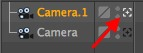
选择这个命令可以从活动对象所在的地方查看场景，视图指向对象的 Z 轴方向。这个命令在检查一个灯光能照射到哪些物体时会有用。记住，在一些显示模式下，你的视图可能会被活动对象的表面挡住。
另外，你还可以在对象管理器中点击相应的摄像机图标。
这个命令会激活编辑器摄像机。
视角
你可以在这里选择摄像机的投射模式，透视视图会显示一条表示视野无限远的地平线。
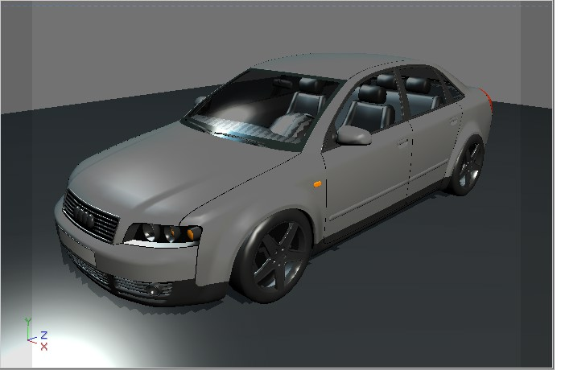
视窗的默认投射模式，它通过一台常规摄像机来展示场景。
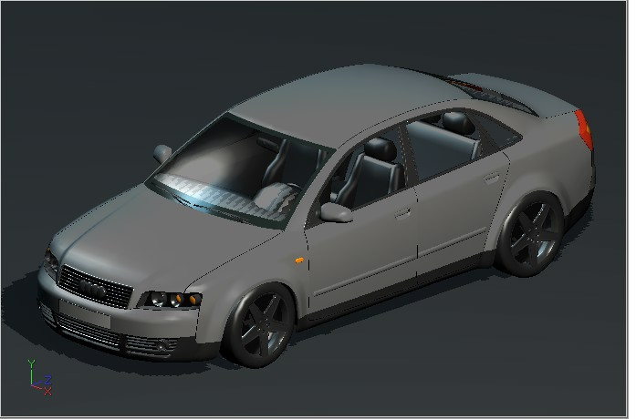
灭点位于无线远处，所有线都是平行的。
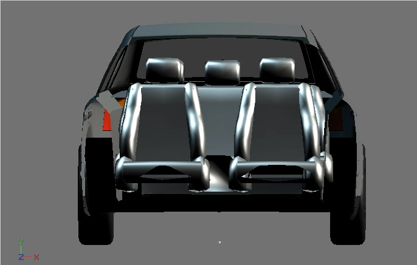
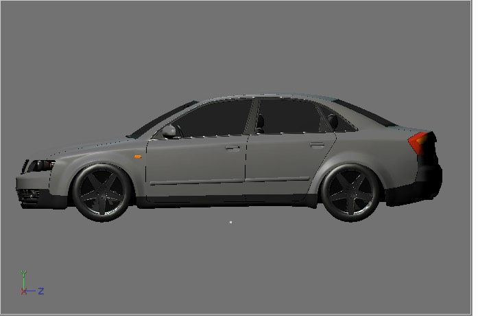
YZ 面视图。

ZY 面视图。
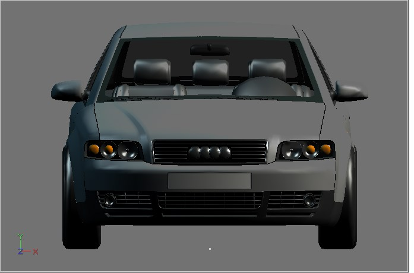
XY 面视图。
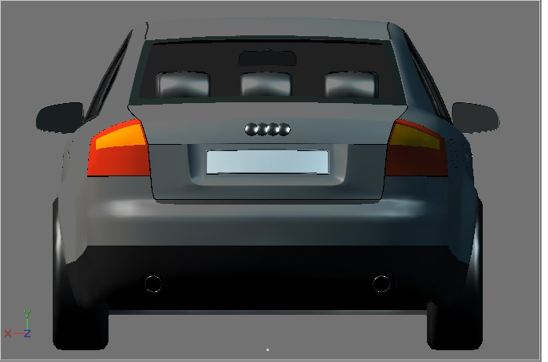
YX 面视图。
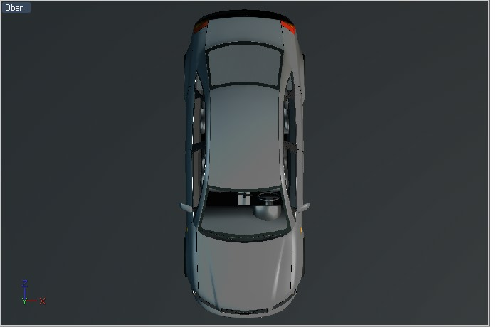
XZ 面视图。
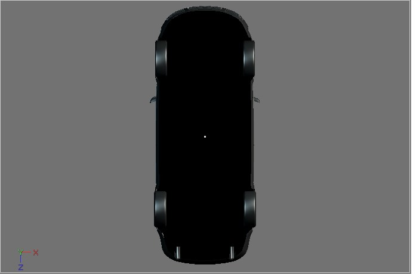
ZX 面视图。
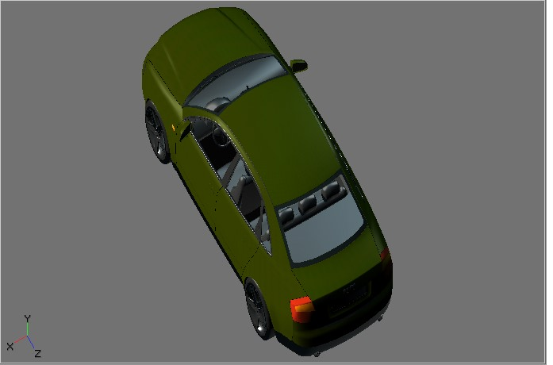X:Y:Z = 1:1:1.
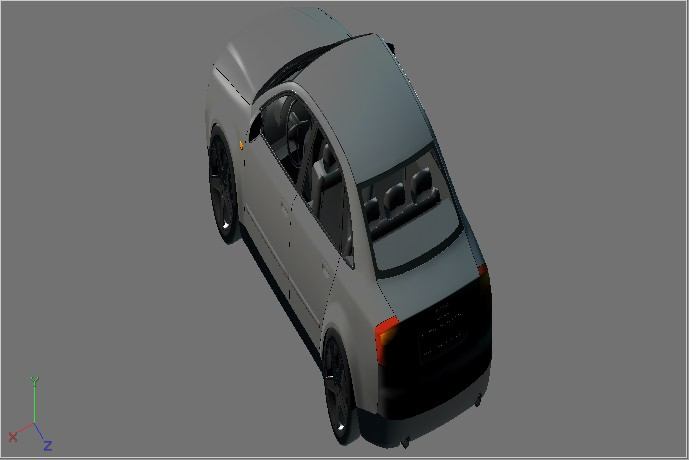X:Y:Z = 1:2:1.
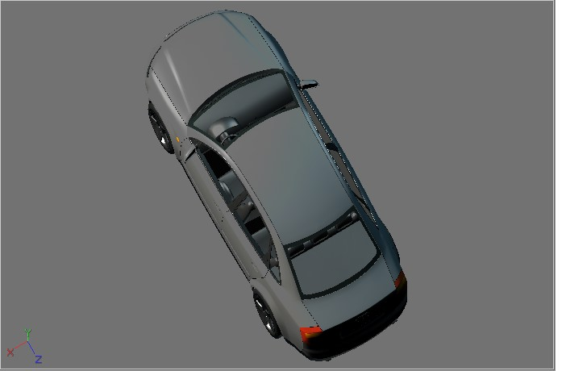X:Y:Z = 1:0.5:1.
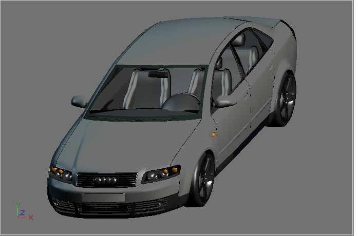X:Y:Z = 1:1:0.5.
一种流行于建筑方面的视角。
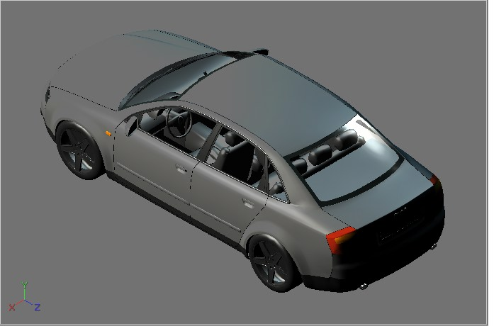
一种流行于科技产品（如机械）方面的视角，X:Y:Z = 1:1:1。
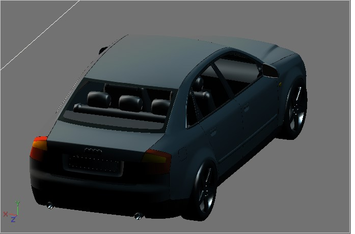
正角视图与等角视图类似，但是 X:Y:Z = 1:1:0.5。